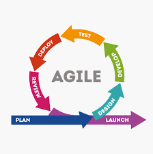

Proceso de desarrollo ágil
Modelo ágil
Es un acolección de moetodologías para el desarrollo de sistemas, las cuales se centran en los usuarios, A estos métodos se les acredita muchos proyectos exitosos de desarrollo de sistemas y en muchos casos tambien se les acredita haber rescatado empresas de un sistema fallido diseñado mediante el uso de una metododlogía estructurada.

los métodos ágiles se basan en la noción del desarrollo y en la entrega incremental ya que proponen procesos diferentes para alacanzarla. se debe aclarar que los métodos ágiles algunas veces son difíciles de realizar, debido a que en la creacion del sistema deben participar los clientes y se debe mantener la simplicidad. Esta metodología es en la actualidad la más utilizada, la cual se basa en principios,valores y prácticas básicas.

principios de los métodos ágiles
Participación del cliente
los clientes deben estar fuertemente implicados en todo el proceso desarrollo.Sua papel es proporcionar y priorizar nuevos requerimientos del sistema y evaluar las iteraciones del sistema.

Entrega incremental
El software se desarrolla en incrementos, donde el cliente especifica los requerimientos a incluir en cada incremento.S
Personas no procesos
se deben reconocer y explotar las habilidades del equipo de desarrollo.se lse debe dejat desarrollar sus propias formas de trabajar sin procesos formales aa los miembros del equipo.
Aceptar el cambio
se debe contar con que los requerimientos del sistema cambian, por lo que el sistema se diseña para dar cabida a estos cambios.
Mantener la simplicidad
se deben centrar tanto en el software a desarrollar como en el proceso de desarrollo.donde sea posible, se trabaja activamente para elimnar la comlejidad del sistema